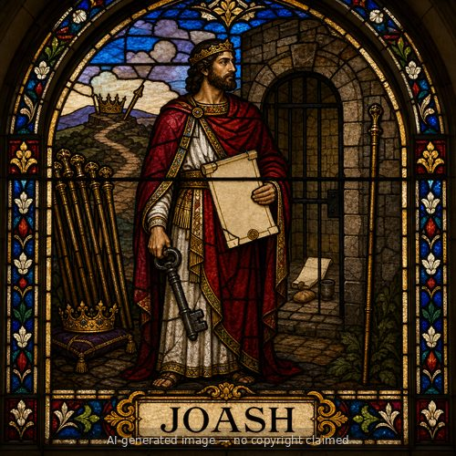
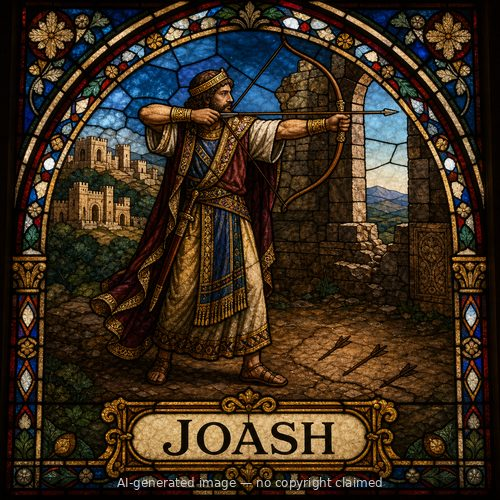

Joash (M)
First named in Judges 6:11-31
Joash was an Abiezrite of the tribe of Manasseh, living in Ophrah, and the father of Gideon. He owned an altar to Baal and an Asherah pole beside it (Judges 6:25) -- household idolatry Gideon grew up under during Israel's long slide into apostasy in the days of the judges. When the angel of the LORD commissioned Gideon to deliver Israel from Midian, the first assignment was closer to home: tear down his father's altar to Baal and the Asherah beside it, and build an altar to the LORD in its place, using the wood of the Asherah for the sacrifice (6:25-27). Gideon obeyed at night, fearing his family and the townspeople. When the men of the city discovered it in the morning, they demanded Joash hand his son over to be killed (6:28-30). Joash's response is the episode's turning point: "Will you contend for Baal, or will you deliver him? ... If he is a god, let him contend for himself, because someone has torn down his altar" (6:31). The crowd relented, and Gideon was called Jerubbaal, "let Baal contend against him," from that day (6:32). Joash's sharp, faithless-shaming logic -- let the god defend himself if he can -- both saved his son's life and publicly exposed Baal's powerlessness before Gideon's God-given deliverance of Israel began.
Thought for Today
Joash exposed Baal's powerlessness by daring the false god to defend his own broken altar. Jesus is the true God who has already conquered every rival.
References: Judges 6:11-31; Judges 7:14; Judges 8:13-32
Genealogy
Connections
Places
- Ophrah — owned the altar of Baal here and defended his son Gideon before the townsmen
Judges 6:25-31
Other people named Joash

